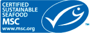

Sustentabilidad al centro del negocio
Trabajamos para hacer el mejor salmón del mundo, cuidando nuestro hogar: la Patagonia chilena.
¿Qué nos hace sustentables?
Situamos la sustentabilidad al centro de nuestro negocio: gestionamos nuestros impactos y generamos valor para nuestros accionistas y la sociedad, con operaciones que promueven la preservación de la Patagonia chilena.
- +10años sin escapes de peces
- 96 %de la meta cero residuos en la cadena de valor (2024)
- 38localidades vecinas a nuestras operaciones
- 8certificaciones internacionales
Memoria integrada y documentos
Te invitamos a conocer nuestra primera Memoria Integrada, correspondiente a 2024, junto a los reportes ESG y las políticas de sustentabilidad.
Estrategia ABC
Nuestra estrategia de sustentabilidad en tres pilares fáciles de entender. Cada uno agrupa iniciativas y metas que reportamos periódicamente. [contenido por definir]
A · Animal
Bienestar animal: asegurar la condición óptima de nuestros salmones durante todo el ciclo. Reúne las metas sanitarias y productivas.
- 0interacciones letales con mamíferos marinos en nuestras operaciones (meta)
- −X %uso de antibióticos por tonelada producida [cifra por definir]
- X %supervivencia de los peces en el ciclo de engorda [cifra por definir]
B · Biósfera
Operaciones que conviven en armonía con el ecosistema: emisiones, control de impacto ambiental, materias primas, circularidad y desempeño ambiental.
- +10años sin escapes de peces
- 100 %de las plantas de proceso cumplió la meta de cero residuos a relleno sanitario (2024)
- 96 %de cumplimiento de la meta de cero residuos en toda la cadena de valor (2024)
C · Comunidades
Colaboración para impulsar el desarrollo sostenible de quienes viven en el sur de Chile, con una política de puertas abiertas y apoyo a proveedores locales.
- 160visitas a nuestras instalaciones con la política de puertas abiertas (2024)
- 23proyectos apoyados por el Banco de Proyectos en 12 localidades (2024)
- Xmicro, pequeñas y medianas empresas locales como proveedores [cifra por definir]
La proteína del futuro
El salmón de cultivo es una de las proteínas animales más ecoeficientes del mundo: tiene baja huella de carbono, usa poca agua y es una fuente de proteína saludable frente a las necesidades alimentarias del mundo.
Huella de carbono en kg de CO₂ por kg de carne comestible
- 2,9Salmón de cultivo
- 5,9Cerdo
- 30Vacuno
Operaciones sustentables
Entendemos la sustentabilidad como parte central de nuestro negocio, que desarrollamos con altos estándares productivos que contribuyen al desarrollo del entorno donde operamos.
-
01
Prevención de escapes
Cultivamos nuestros peces con infraestructura de gran calidad, resistente a los climas más duros, para contenerlos y resguardarlos durante todo el ciclo productivo.
-
02
Cuidado de fondos marinos
Realizamos de forma permanente, rigurosa y sistemática operativos de limpieza de los fondos marinos de todos nuestros centros de cultivo.
-
03
Playas limpias
En línea con el cuidado del medioambiente y de las comunidades vecinas, realizamos operativos regulares de limpieza del borde costero.
Vinculación comunitaria
Formamos relaciones sólidas y de largo plazo con las comunidades locales, a las que buscamos aportar en su desarrollo y calidad de vida.
-
01
Gestión activa del vínculo
Construimos vínculos con los actores sociales relevantes del territorio a través de comunicación permanente, generando confianza y un desarrollo armónico.
-
02
Inversión social para el desarrollo
Aportamos al desarrollo social y económico de los territorios donde estamos presentes, en alianza con la sociedad civil, el Estado y otras organizaciones públicas y privadas.
-
03
Promoción del cuidado del medioambiente
Fomentamos instancias educativas y asociativas para crear, en nuestras comunidades vecinas y colaboradores en terreno, una cultura de respeto y cuidado del planeta.
- 5regiones
- 22comunas
- 38localidades
Certificaciones y membresías
Contamos con las certificaciones internacionales más exigentes, que acreditan una gestión estandarizada, eficiente y responsable de nuestros procesos y productos.
-
Certifica prácticas responsables de acuicultura en materia ambiental, social, de bienestar animal e inocuidad alimentaria. Respalda el origen responsable del producto.
-

Certifica el cultivo responsable mediante requisitos ambientales y sociales. Respalda el abastecimiento desde centros de cultivo evaluados bajo un estándar internacional.
-

Verifica la identificación, segregación y trazabilidad del producto certificado durante su procesamiento y comercialización, preservando su integridad a lo largo de la cadena de suministro.
-

Certifican los sistemas de gestión de calidad, medio ambiente y seguridad y salud en el trabajo. Respaldan procesos estandarizados y orientados a la mejora continua.
-

Evalúa la calidad e inocuidad alimentaria en las plantas de proceso. Respalda el cumplimiento de requisitos de producción para entregar alimentos seguros al cliente.
-
Certifica requisitos de inocuidad, calidad y control de procesos en las plantas. Aporta respaldo al cliente sobre la gestión de riesgos en la elaboración de alimentos.
-

Certifica el cumplimiento de los requisitos alimentarios de la religión judía. Respalda la conformidad de ingredientes y procesos para los productos incluidos en su alcance.
-
Dow Jones Sustainability Index (DJSI) es el más importante ranking de parámetros ESG (medio ambiente, sociedad y gobernanza, por su sigla en inglés), debido a su completa evaluación de 61 sectores industriales en todo el mundo.
-
Parte del gremio que busca generar acuerdos, proyectos e instancias que permitan el desarrollo de la industria salmonera en armonía con el medioambiente, los trabajadores y el crecimiento sustentable de la región de Magallanes.
-
Somos parte de la Asociación de la Industria del Salmón de Chile A.G., que agrupa a las principales empresas productoras y proveedoras de Salmón Atlántico, Coho y Trucha.
-
Somos parte de la iniciativa mundial que busca ofrecer una fuente saludable y sustentable de proteína para alimentar a una creciente población, al mismo tiempo que minimizar su huella ambiental y continuar mejorando su aporte social.
-
Este índice, impulsado por The Farm Animal Investment Risk & Return (FAIRR), analiza el desempeño de los principales productores mundiales de proteínas, tanto de carne como de lácteos y productos del mar, que cotizan en bolsa, de acuerdo a indicadores de sustentabilidad y factores de riesgo.
Proyectos de alto estándar
La economía circular, el cambio climático y el uso consciente de materias primas son parte de nuestros motores de alto rendimiento.
01. Modelo de economía circular
Evitamos el envío de desechos a rellenos sanitarios y valorizamos los residuos por medio de la reutilización o el reciclaje, conscientes de los beneficios ambientales y sociales de la economía circular.
02. Estrategia de cambio climático
Con el programa “Multi X Climate Action Strategy” impulsamos el uso de energías renovables, la reducción de emisiones y del uso de petróleo, y tecnología de mejora continua.
03. Uso consciente de materias primas
Promovemos materias primas sustentables y de alta calidad en la alimentación de nuestros peces: aceite y harina de pescado, con seguimiento de la relación Fish In / Fish Out.
04. Desarrollo sostenible
Asumimos nuestra responsabilidad con los Objetivos de Desarrollo Sostenible de las Naciones Unidas; nuestras operaciones están en línea con varios de ellos.